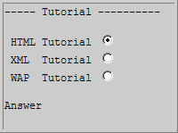
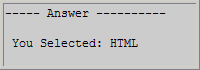

WML 实例
带有两个卡片的一个卡片组 - 一个供用户输入，一个供显示结果 - 正如本例中展示的：
<?xml version="1.0"?> <!DOCTYPE wml PUBLIC "-//WAPFORUM//DTD WML 1.1//EN" "http://www.wapforum.org/DTD/wml_1.1.xml"> <wml> <card id="card1" title="Tutorial"> <do type="accept" label="Answer"> <go href="#card2"/> </do> <p> <select name="name"> <option value="HTML">HTML Tutorial</option> <option value="XML">XML Tutorial</option> <option value="WAP">WAP Tutorial</option> </select> </p> </card> <card id="card2" title="Answer"> <p> You selected: $(name) </p> </card> </wml>
在您的移动电话显示屏上，结果看上去也许类似这样：
第二张卡片看上也许类似这样：
例子解释
Prolog
<?xml version="1.0"?> <!DOCTYPE wml PUBLIC "-//WAPFORUM//DTD WML 1.1//EN" "http://www.wapforum.org/DTD/wml_1.1.xml">
WML 文档中的第一行称为 prolog。prolog 定义了文档是 XML 文档，然后它定义了 XML 的版本，以及要引用的 DTD。
Deck
<wml> ..... </wml>
deck 是 WML 文档本身。它被嵌套在 >wml> 标签中。
Cards
<card> ..... </card>
一次只显示一个卡片。这个 WML 卡片组包含两个卡片 - 一个供用户输入，一个供结果显示。
<do> 元素
<do> ... </do>
第一个卡片拥有 <do> 元素，该元素定义了被触发的事件。<do> 元素的 type="accept" 属性使 label="Answer" 显示在屏幕的左下角。
Event
当用户点击 <do> 标记时会触发 <go> 元素。<go> 元素的 href="#card2" 属性使卡片二显示在屏幕上。
Variable
卡片二显示来自卡片一的 $(name) 变量，因为变量在卡片之间是有效的。